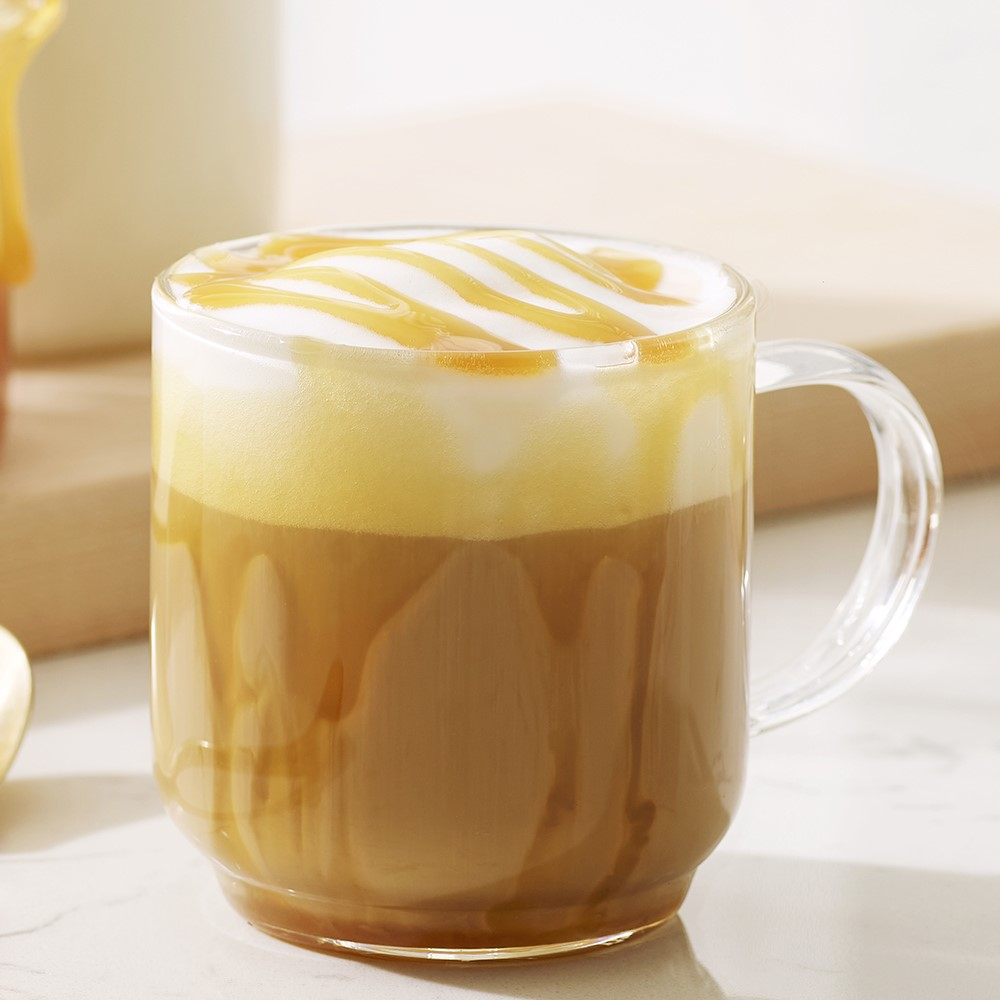
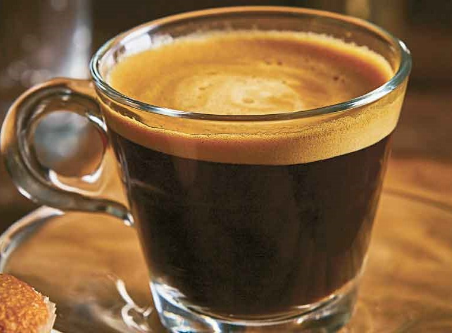
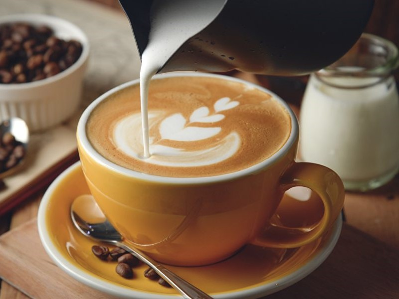
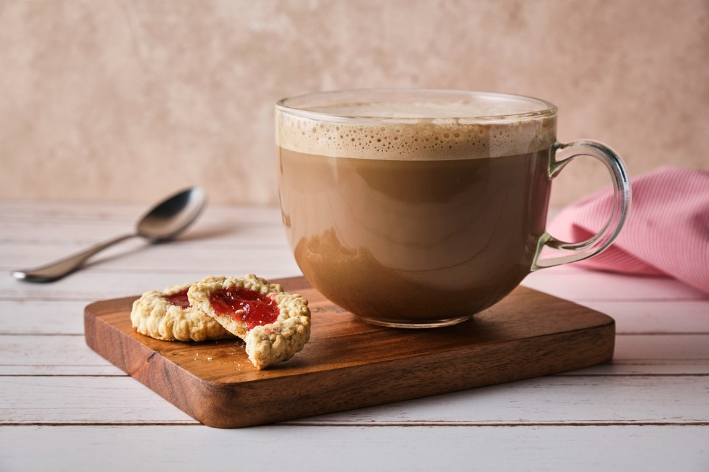

WELCOME to
Coffe Market
Caramel Macchiato
ECHO CON
Leche al vapor manchada con espresso y un toque de vainilla, cubierta con un característico dibujo de caramelo.

Expreso
ECHO CON
El café espresso es una forma concentrada de café que se sirve en medidas. Se compone de dos ingredientes: café 100 % finamente molido y agua caliente.

Capuchino
ECHO CON
Un capuchino contiene expreso, vapor y espuma de leche a partes iguales. La taza de un capuchino es más pequeña que la taza del café latte, generalmente de 150 a 180 ml. El tamaño de la taza es muy importante para conseguir el equilibrio perfecto entre el sabor del expreso y la cantidad exacta de leche.

Mocca
ECHO CON
¿Qué es un café mocha? Aunque el mocha a menudo tiene interpretaciones variadas en los diferentes lugares del mundo, el concepto básico consiste en combinar una medida de espresso con chocolate en polvo o sirope, seguido de leche o nata.
